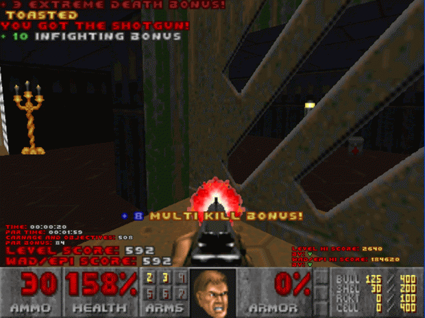
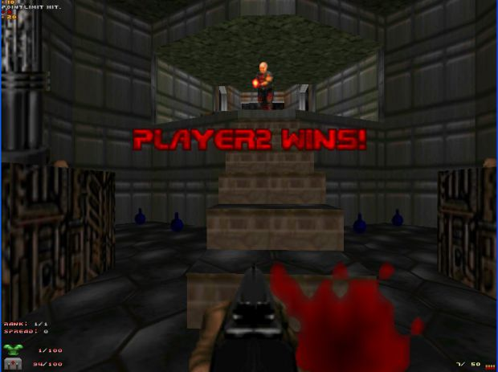
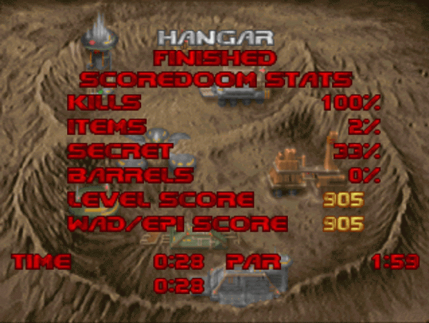
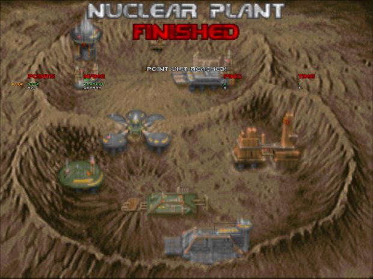
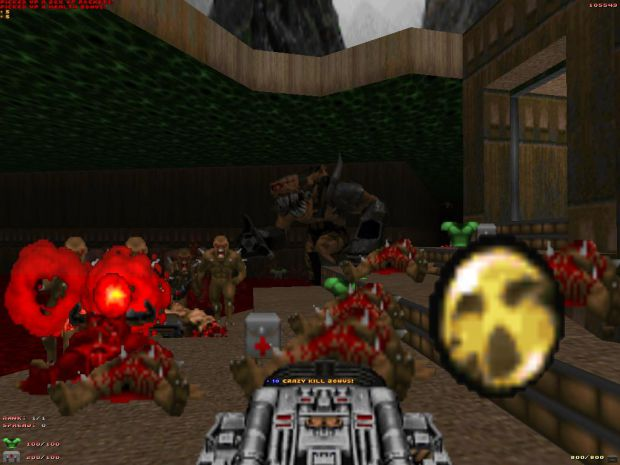
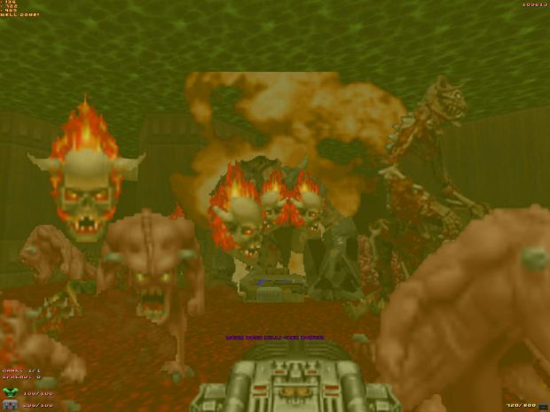
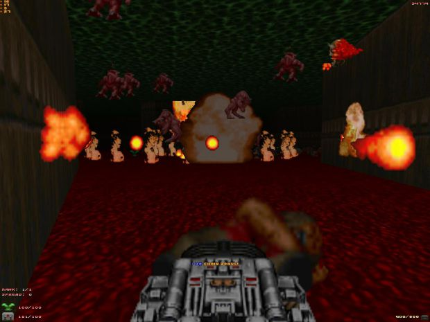
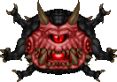

ScoreDoom/ScoreDoomST ScreenShots
All media was created when using either the ScoreDoom or ScoreDoomST Add-On Pack.
|  Regular ScoreDoom HUD |
 ScoreDoomST Point Limit Hit |
 ScoreDoom Intermission Screen |
 ScoreDoomST Intermission Screen |
|  Double Damage Artifact |
 Carnage During 'Boss Rush' |
 BFG Mini-Nuke Alt-Fire Effects |
 Add-on Pack Boss: The OverLord |
ScoreDoom/ScoreDoomST Videos
ScoreDoomST Basic Gameplay |
Boss Rush on Phobos Anomaly (E1M8) |
ScoreDoom w. Add-on Pack on Hell Revealed 2 |